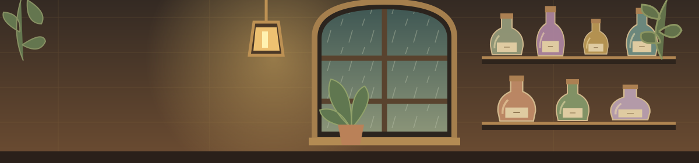

SEJAK BULAN PURNAMA
Seduh sedikit
Seduh sedikit
keajaiban.
Untuk malam yang panjang,
dan hati yang ingin pulang.
✦ racikan tangan · bahan khayalan ✦
Selamat datang, peracik.
Layani pelanggan selama 180 detik aktif. Pilih 3 bahan, atur api, lalu botolkan saat jarum masuk pita sasaran.
Kemajuan disimpan setelah giliran selesai. Racikan aktif tidak dipulihkan.
MEJA RACIK
1 · Pilih tiga bahan
Suhu 20.0°
Api mengubah suhu secara bertahap. Angkat di pita sasaran; minimal 1 detik.
Adukan 0%
Jarum bergerak bolak-balik. Botolkan di pita sasaran; minimal 0,25 detik.
Kualitas 0 / 100
Buka kedai untuk menyambut pelanggan pertama.